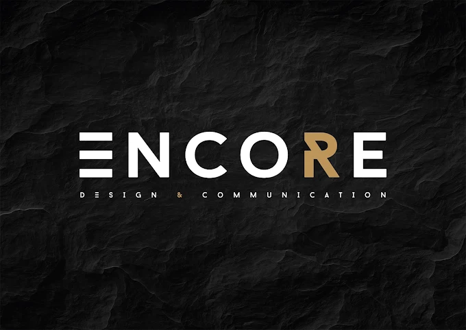
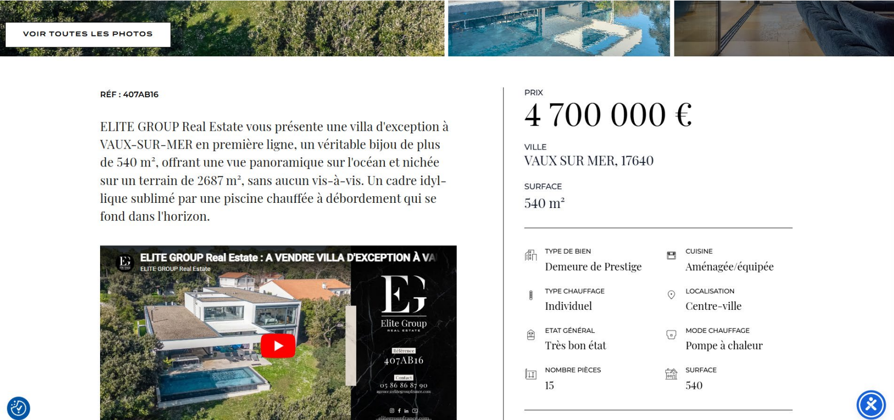
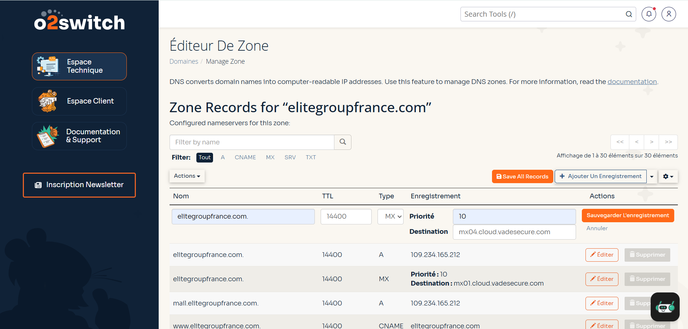
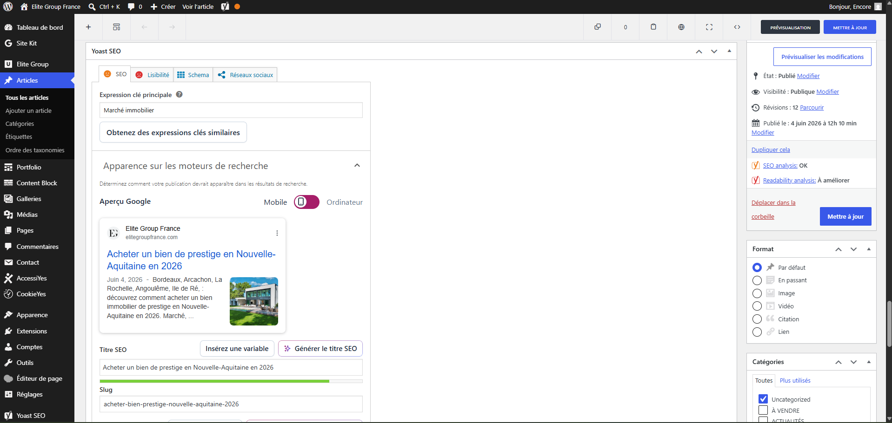
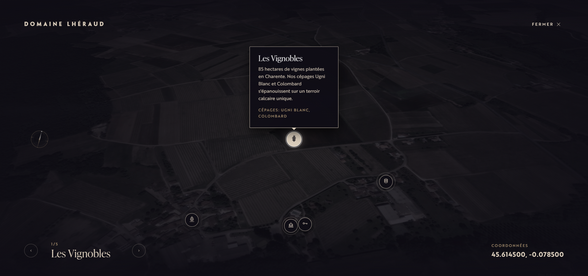
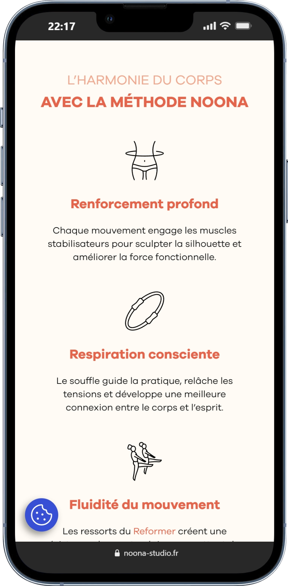

Stage : Encore Design & Communication
8 semaines, du 13 avril au 5 juin 2026 - Angoulême
Contexte du stage
J'ai réalisé mon stage chez Encore Design & Communication, une agence de communication 360° à Angoulême. L'équipe est à taille humaine (7 personnes) avec des graphistes, un vidéaste, un alternant, un référenceur SEO, une responsable réseaux sociaux et un intégrateur web (mon tuteur Alex Jolly). Je suis venu compléter l'équipe côté développement.
Mon objectif : travailler sur des sites en production, avec de vrais clients qui s'en servent au quotidien. Plutôt que de partir d'une page blanche, j'ai dû reprendre du code écrit par d'autres, faire évoluer des sites existants, et gérer la relation client directement par mail et téléphone. Le fil que j'ai suivi pendant 8 semaines : comment reprendre le site et les services numériques d'une entreprise, du code jusqu'à l'hébergement, sans interrompre son activité.

Mission principale : reprise du site Elite Group
Elite Group est une agence immobilière de prestige d'Angoulême. Le site existait déjà sous WordPress avec le thème Uncode, mais avec une particularité : les biens immobiliers ne sont pas saisis dans WordPress, ils sont récupérés depuis le CRM de l'agence via une API REST, à travers un plugin Symfony + Twig développé sur mesure par un développeur précédent.
Je n'arrivais donc pas sur une page blanche : j'ai dû lire le code d'un autre développeur, comprendre l'API, puis corriger plusieurs choses. La recherche cassée sur la page d'accueil, la pagination qui ne tournait plus, le remplacement d'un carrousel par une vraie galerie en grille, l'ajout d'un tri sur les annonces (prix, date, surface), et la génération d'étiquettes DPE en SVG directement dans les templates Twig.
Cette mission m'a permis de valider l'AC24.03 - Intégrer, produire ou développer des interactions riches.

Hébergement et migration DNS
C'est la partie qui m'a le plus appris, parce que je n'avais jamais touché aux zones DNS, aux enregistrements MX ni aux transferts de domaine. L'agence travaille avec l'hébergeur français o2switch et son interface cPanel.
Pour Elite Group, j'ai dû basculer le site et les 10 boîtes mail des employés d'OVH vers o2switch sans interrompre l'activité. J'ai rédigé une notice d'export pour les employés, créé un formulaire pour récupérer leurs identifiants, recréé les 10 comptes sur o2switch, rechargé chaque sauvegarde Thunderbird, puis modifié les enregistrements MX. J'ai également rédigé une notice de configuration de Thunderbird et de Mail d'Apple pour chacun.
J'ai refait ce type de migration pour le restaurant Le Lion Rouge, et acheté/configuré un nom de domaine pour bistrot-murier.fr. La procédure de transfert OVH vers o2switch (désactivation des protections, génération d'un authcode, finalisation de la bascule) est devenue quasiment une routine.
Ces opérations valident pour moi l'AC24.06 - Configurer une solution d'hébergement adaptée aux besoins.

Optimisation SEO avec Yoast
Sur plusieurs sites WordPress de l'agence, dont Elite Group, j'ai travaillé l'optimisation référencement avec le plugin Yoast SEO. Concrètement : rédaction de meta titles et meta descriptions uniques sur les articles de blog et les pages clés, choix de mot-clé principal pour chaque contenu, et correction des points remontés par Yoast (longueur des titres, présence du mot-clé dans l'URL et les sous-titres, lisibilité du texte). J'ai aussi optimisé le poids des images et leurs attributs alt pour améliorer le score Lighthouse.
Cela m'a permis de valider l'AC24.05 - Optimiser une application web en termes de référencement et de temps de chargement.

Refonte créative : la maison de cognac Lhéraud
Mon dernier grand projet, et le plus créatif, a été la refonte complète du site de la maison de cognac Lhéraud. La direction artistique attendue était luxueuse, animée, élégante. J'ai d'abord fait une phase de veille et de benchmark sur Awwwards, construit un moodboard sur Figma, puis maquetté les pages.
Côté workflow, j'ai mis en place un vrai pipeline de développeur : code versionné sur GitHub, déploiement automatique sur Vercel à chaque push. Cela me donnait une URL en ligne à jour à chaque modification, parfaite pour montrer mes avancées à mon tuteur sans avoir à uploader manuellement.
Techniquement, deux choses m'ont particulièrement marqué. D'abord la hero section animée : une vidéo en fond passée comme texture dans un petit programme WebGL avec des shaders, qui applique un effet de liquid distortion révélé au passage du curseur. Ensuite, une carte 3D interactive du domaine, réalisée avec la bibliothèque MapLibre GL JS, avec une boussole animée en temps réel grâce à GSAP qui pointe toujours vers le nord.
Cette partie consolide l'AC24.03 - Intégrer ou développer des interactions riches, et cette phase de recherche pour trouver MapLibre et apprendre les shaders WebGL constitue une vraie démarche de veille technologique.

Autres missions et compétences transversales
En parallèle de ces gros projets, j'ai aussi recodé en HTML les signatures de courriel d'une entreprise du bâtiment (avec toute la galère de compatibilité Outlook / Gmail / Thunderbird), repris le responsive des sites Noona Studio et RD Bois, et ajouté des animations sur RD Bois. Ces missions plus courtes valident l'AC24.01 - Produire des pages et applications Web responsives.

Côté gestion de projet, l'agence fonctionne avec Trello et des points hebdomadaires : c'est une vraie démarche d'amélioration continue. J'étais en contact direct avec les clients par téléphone, mail et parfois en présentiel, ce qui m'a obligé à rédiger des notices claires pour des personnes qui ne sont pas techniciennes. Tout ça travaille l'AC25.01, l'AC25.04 - Collaborer au sein des organisations et l'AC25.05 - Maîtriser les codes des productions professionnelles. Et la gestion de données sensibles comme les identifiants mail et les informations clients m'a fait toucher à l'AC25.06 - Prendre en compte les contraintes juridiques.
Bilan
Ces huit semaines m'ont fait toucher à presque toute la chaîne d'un projet web, du code jusqu'à l'hébergement. J'en sors avec une vision beaucoup plus concrète du métier : un développeur ne fait pas que coder, il explique, écrit des notices, et résout des incidents qu'il ne peut pas toujours anticiper. C'est cet aspect "vie réelle" qui m'a le plus marqué.
Mon principal axe de progrès reste l'anticipation : sur la migration Elite Group, j'ai trop souvent géré les imprévus au fur et à mesure plutôt que de les prévoir en amont. Si je devais refaire la bascule, je la préparerais mieux (intervention hors horaires de l'agence, vérification des SPF en amont, réduction des durées de propagation DNS). C'est une vraie leçon pour la suite.
Le stage s'est tellement bien passé qu'il a été prolongé au-delà de la période initiale. Aujourd'hui, ça me conforte clairement dans l'idée de continuer dans cette voie, et c'est une expérience concrète sur laquelle je vais pouvoir m'appuyer pour la troisième année et mes prochains stages.
Liens du stage
Compétences développées
Produire des pages et applications Web responsives
Mettre en place ou développer un back office
Intégrer, produire ou développer des interactions riches ou des dispositifs interactifs
Optimiser une application web en termes de référencement et de temps de chargement
Configurer une solution d'hébergement adaptée aux besoins
Gérer un projet avec une méthode d'amélioration continue (par exemple une méthode agile)
Collaborer au sein des organisations
Maîtriser les codes des productions écrites et orales professionnelles
Prendre en compte les contraintes juridiques